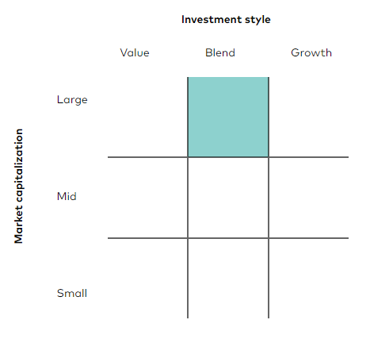
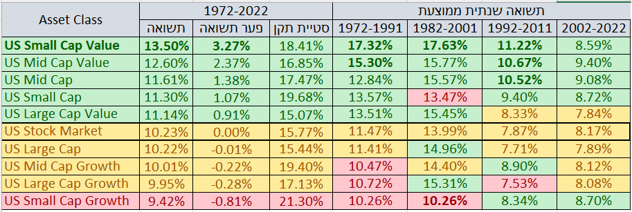

פורסם בתאריך 21.4.2020, עודכן בתאריך 5.10.2023
התכנים בפוסט זה, כמו כל שאר התכנים בבלוג, הינם תכנים לימודיים במהותם, הם אינם מהווים ייעוץ או המלצה לביצוע פעולה בנייר ערך, ואין לראות בהם תחליף לייעוץ השקעות ו/או ייעוץ פנסיוני המתחשב בצרכיו הייחודיים של כל אדם.
איך נוכל להגדיל את תשואת התיק לטווח הארוך באופן פאסיבי, מושכל, ומבוסס על נתונים? השימוש בפקטורים הוא עיקרון חשוב בתכנון התיק שלנו, והוא מאפשר לנו להגדיל את הסיכון באופן מושכל, כך שבסבירות גבוהה מאוד נגדיל גם את התשואה.

מה זה בכלל פקטורים?
פקטורים הם מאפיינים ייחודיים שמאפשרים להבחין בין קבוצות של מניות מסוגים שונים. לאורך השנים חוקרים באקדמיה בחנו 🧐 קבוצות מניות מסוגים שונים והשוו בין התשואות והתנודתיות שלהן 📊, ובפרט בין הקבוצות השונות אל מול שוק המניות הכולל 🌍.
שני הפקטורים המשמעותיים ביותר שהתגלו (ע"י זוכי פרס נובל יו'גין פאמה וקנט פרנץ') הם פקטור הגודל (size) ופקטור הערך (value). מה כ"כ מיוחד בהם? שנים ארוכות של סטטיסטיקה הראו ששני הפקטורים האלה מייצרים תשואה עודפת באופן מובהק סטטיסטית בהשוואה לתשואת כלל השוק.
בעבר חשבו שהפקטורים האלה מייצרים alpha, כלומר תוספת תשואה עודפת "בחינם". אך מחקרי המשך גילו, כצפוי, שאין ארוחות חינם 🍝, והתשואה העודפת מגיעה יחד עם תנודתיות גבוהה יותר.
האם מניות קטנות רווחיות יותר ממניות גדולות?
פקטור הגודל מוגדר בספרות האקדמית כ-Small Minus Big (SMB). הנתונים הסטטיסטיים מראים שסגמנט המניות הקטנות 🤏 (בעלות שווי שוק נמוך) משיג תשואה גבוהה יותר לטווח הארוך מסגמנט המניות הגדולות (בעלות שווי שוק גבוה). זה לא קורה בכל שנה ושנה, וגם לא בכל עשור, אבל זה כן קורה רוב הזמן, ובמיוחד אם מסתכלים על פרק זמן מספיק ארוך.
למה מניות קטנות רווחיות יותר ממניות גדולות ומה זה אומר לגבי העתיד?
כדי להסיק מסקנה ע"ס סטטיסטיקה יש להתייחס לשני גורמים:
1. נתונים סטטיסטיים ארוכי טווח שתומכים במסקנה.
2. הסבר תיאורטי מוצק שמניח את הדעת.
נתונים סטטיסטיים בלבד לא מספיקים – אם למשל נגלה שסגמנט המניות שמתחילות באות B היה רווחי יותר מכל שאר המניות באופן מובהק סטטיסטית במשך 80 שנה, האם יש סיבה להאמין שזה ימשיך גם בעתיד ולעבור להשקיע רק במניות שמתחילות באות B? כמובן שלא, מדובר בעניין מקרי לחלוטין!
לעומת זאת, ההנחה שסגמנט המניות הקטנות ימשיך להניב תשואה גבוהה יותר מסגמנט המניות הגדולות עונה על שני הגורמים – יש גם נתונים סטטיסטיים תומכים, וגם הסבר תיאורטי מניח את הדעת:
1. כאמור, נתונים סטטיסטיים של עשרות שנים מראים תשואה עודפת באופן מובהק סטטיסטית של המניות הקטנות מול המניות הגדולות (פרטים בהמשך).
2. ההסבר התיאורטי למה מניות קטנות רווחיות יותר ממניות גדולות הוא די ברור – יש להן יותר לאן לצמוח! כלומר קצב הצמיחה של חברות קטנות גבוה מזה של חברות גדולות ומבוססות. זה כמובן לא אומר שכל מניה קטנה תהיה רווחית יותר מכל מניה גדולה. טווח התוצאות האפשרי לכל מניה פרטנית הוא עצום – מעליות של אלפי אחוזים ועד קריסה ל-0 ופשיטת רגל. ככה שהכלל מתייחס רק לסגמנט הכולל של מניות קטנות מול הסגמנט הכולל של המניות הגדולות.
אז אמנם אף אחד לא יודע מה יהיה בעתיד, אבל ניתן להניח שבסבירות גבוהה סגמנט המניות הקטנות ימשיך להוביל בתשואות גם בעתיד.
האם מניות זולות רווחיות יותר ממניות יקרות?
פקטור הערך (value) מוגדר בספרות האקדמית כ-High Minus Low (HML). הנתונים הסטטיסטיים מראים שסגמנט המניות ה"זולות" משיג תשואה גבוהה יותר לטווח הארוך ממניות "יקרות".
מניות זולות, המכונות גם מניות ערך (value stocks), מוגדרות ככאלה שמחירן הנוכחי בבורסה נמוך ביחס לרווחיות שלהן בספרים. היחס הזה נמדד בין היתר באמצעות מכפילים כגון price/earnings, price/book ופרמטרים אחרים, כאשר המניות הזולות מתאפיינות במכפילים נמוכים.
המניות ההפוכות למניות ערך מוגדרות כמניות צמיחה (growth stocks). הן נחשבות כיקרות ומתאפיינות במכפילים גבוהים.
בעצם לא מדובר בהפכים מוחלטים 🔁. ההגדרה למניות צמיחה היא מניות שצופים להן צמיחה גבוהה. כיוון שאותן חברות הראו צמיחה גבוהה בעבר 📈, צופים להן המשך צמיחה גבוהה בעתיד, וכאשר הצפי מחברה מסוימת הוא לצמיחה גבוהה בעתיד – המשקיעים מוכנים לשלם מחיר גבוה יותר על המניה שלה כבר היום, מה שמייקר את מחיר המניה בהווה. זאת הסיבה שמניות צמיחה נחשבות "יקרות" ומתאפיינות במחירים גבוהים ביחס לרווחיות האמיתית של החברות.
איך מחלקים בין מניות ערך למניות צמיחה?
ישנם כל מיני מאפיינים למניות צמיחה ומאפיינים למניות ערך, והרבה מקום לשיקול דעת – על אילו מאפיינים להסתמך, איזה משקל לתת לכל מאפיין, כמה אחורה מודדים (למשל האם למדוד את ה-price/earnings בשנה האחרונה, ב-3 שנים האחרונות או ב-5 שנים האחרונות וכו'). כשיש מקום לשיקול דעת, עצם החלוקה בין סוגי המניות נכנס למחוזות ההשקעה האקטיבית.
יחד עם זאת, קיימים מדדים של מניות ערך ומדדים של מניות צמיחה, אשר הגדירו נוסחה לניקוד כל מניה לפי מאפייני ה-Value/Growth ומיינו אותן על ציר. כך ניתן להפריד אוטומטית, וללא שיקול דעת של מנהל השקעות, בין המניות שהן מניות ערך מובהקות, לבין מניות שהן מניות צמיחה מובהקות, ולבין מניות שהן לא מובהקות לשום כיוון. כשיש נוסחה וכללים ברורים, ואין שיקול דעת למנהל הקרן, זו בעצם השקעה פאסיבית לכל דבר ועניין.
כאמור הנתונים הסטטיסטיים מראים תשואה עודפת של המניות הזולות (מניות ערך) מול המניות היקרות (מניות צמיחה). אבל אמרנו שלא מספיק להסתמך רק על הסטטיסטיקה וצריך להיות גם הסבר תיאורטי מוצק.
ההסבר התיאורטי לעדיפות בתשואות של מניות ערך מסתמך על העיקרון ש:
Higher Valuations --> Lower Expected Returns
Lower Valuations --> Higher Expected Returns
ובתרגום חופשי – כאשר מחיר המניה גבוה בהווה, הצפי הוא לתשואות נמוכות יותר בעתיד, וההיפך – כאשר מחיר המניה נמוך בהווה הצפי הוא לתשואות גבוהות יותר בעתיד.
מניות הצמיחה אמנם הציגו צמיחה גבוהה בעבר, ובהחלט יכול להיות שביצועי חברות הצמיחה יהיו טובים מאוד גם בעתיד. אבל פעמים רבות קורה שהמחיר של מניית צמיחה קפץ כ"כ הרבה בגלל הציפיות לעתיד, עד שנוצר נתק בין ביצועי החברה בפועל למחיר המניה, והמניה מתומחרת יותר מדי גבוה.
חשוב להבין שהחברה והמניה זה לא אותו דבר. כשנוצר נתק בין ביצועי החברה למחיר המניה, גם ביצועים טובים של החברה, לא מעידים בהכרח על ביצועים טובים של המניה. החברה יכולה להמשיך להרוויח ולצמוח, אבל מניית החברה תדשדש ואף תרד.
אותו עיקרון, רק הפוך, פועל על מניות ערך. מניות ערך מתומחרות בזול מסיבה מסוימת, ככל הנראה בגלל קשיים ובעיות שמשפיעים על החברה, ולכן הן נחשבות להשקעה מסוכנת יותר. אבל יכול להיות שגם במקרה הזה נוצר נתק בין ביצועי החברה בפועל למחיר המניה, והמניה מתומחרת נמוך מדי, כלומר השוק מעריך את הקשיים של החברה יתר על המידה, וביצועי המניה בעתיד יהיו טובים יותר מהצפי של השוק. גם אם הביצועים של החברה בפועל לא יהיו מזהירים, ביצועי המניה יכולים להיות טובים מאוד, כיוון שביצועי החברה בפועל היו גבוהים מהציפיות.
אחת הסיבות לכך שנוצר תמחור גבוה מדי למניות צמיחה ונמוך מדי למניות ערך, היא בגלל התלהבות גבוהה ולעיתים מוגזמת של המשקיעים מחברות הצמיחה המגניבות 😎, שהן לרוב חברות טכנולוגיה מוכרות ופופולריות, ומנגד המשקיעים נוטים להתעלם ואף לזלזל במניות "משעממות" 🥱 שפחות מציתות את הדמיון.
אבל כמשקיעים הפופולריות של המניות לא צריכה לעניין אותנו יותר מדי. עדיף לנו לקנות בזול מניה של חברה שהיא רק "בסדר" מאשר לשלם מחיר מאוד גבוה על החברה הטובה ביותר בעולם.
גם במקרה של מניות ערך מול מניות צמיחה – לא ניתן להגיד שום דבר על מניית צמיחה ספציפית מול מניית ערך ספציפית. אבל כשמסתכלים על כל מניות הערך כמכלול מול כל מניות הצמיחה כמכלול – אז רוב הזמן, ובמיוחד לטווח הארוך, התשואות של מניות הערך היו עדיפות על התשואות של מניות הצמיחה, וסביר מאוד להניח שכך יקרה גם בעתיד.
ציר ה-Market Cap וציר ה-Style
שוק המניות העולמי כולל את כל המניות מכל הסוגים – מניות גדולות, בינוניות וקטנות, ושילוב (Blend) של מניות ערך ומניות צמיחה.
החלוקה בין מניות גדולות-בינוניות-קטנות ובין מניות ערך למניות צמיחה משתנה בין חברות המדדים השונות (S&P, FTSE, MSCI). יחד עם זאת ההבדלים באופן החלוקה לא מאוד גדולים, וניתן לציין ש:
• המניות הגדולות תופסות כ-70% מכלל השוק. זה קורה בגלל שהמדדים בנויים לפי שווי שוק, ככה שהחברות הגדולות יותר תופסות נתח גבוה יותר מהמדד.
• המניות הבינוניות תופסות כ-15% מכלל השוק.
• המניות הקטנות תופסות אף הן כ-15% מכלל השוק.
• החלוקה בין מניות ערך לבין מניות צמיחה היא בערך חצי-חצי, ויש גם מניות שלא מאוד מובהקות לכיוון של ערך או צמיחה.
מקובל לחלק את שוק המניות לתתי אפיקים שונים (Asset Classes) באמצעות טבלת Style box של 3x3. הטבלה הזאת מוצגת פעמים רבות בהקשר של מדדים וקרנות עוקבות מדדים.
הציר האנכי של הטבלה הוא ציר ה-Market Cap, כלומר שווי השוק, והוא מתחלק ל-Large, Medium, Small. הציר האופקי הוא ציר ה-Style, כלומר סוג המניות, והוא מתחלק ל-Value, Blend, Growth, שהן מניות ערך, מניות צמיחה, ו-Blend שהוא השילוב ביניהם.

נוכל לקחת כדוגמא את ה-Grid של הקרן הפופולרית VT (ראו להלן), שעוקבת אחרי מדד FTSE Global All Cap Index, שמהווה one stop shop לכל שוק המניות העולמי (כל השווקים – מפותחים ומתפתחים כאחד, מניות בכל הגדלים, ושילוב של מניות צמיחה ומניות ערך).
כיוון שמדד FTSE Global All Cap Index כולל (כמעט) את כל שוק המניות העולמי, אז בעצם כל הקוביות בטבלה אמורות להיות מסומנות, כי הקרן משקיעה בכל הסגמנטים. הסיבה שמודגש רק התא של Large & Blend היא שמדובר בחלק העיקרי במדד – המניות הגדולות תופסות את רוב המשקל במדד, וכיוון שיש בו גם מניות ערך וגם מניות צמיחה, מסומן Blend.
ועכשיו לנתונים
אחרי שהבנו את אופן החלוקה לתתי אפיקים, מעניין למדוד את התשואות והתנודתיות של כל אפיק ואפיק: מניות גדולות, בינוניות וקטנות, מניות ערך, מניות צמיחה, והשילובים ביניהם. כלומר לבחון את כל השורות והעמודות בטבלה, וגם את כל התאים הספציפיים שלה.
אז החלטתי לבצע בדיקה מעמיקה 🔍. באמצעות הכלי המצוין portfolio visualizer בחנתי את הנתונים על פני 51 שנה, בין 1972-2022. למתעניינים – תחת Backtest Portfolio בחרתי ב-Backtest Asset Allocation.
לא הסתפקתי רק בתשואה ובסטיית התקן הממוצעת לאורך כל התקופה, אלא רציתי לבחון גם מקטעים קצרים יותר, אבל לא קצרים מדי כיוון שהסתכלות על פרקי זמן קצרים מדי יכולה לעוות את המציאות. כיוון שאפילו עשור היא לא תקופה מייצגת בשוק המניות רציתי לבחון תקופות מספיק ארוכות. לכן בחנתי את כל התקופות של 20 שנה מ-1972 ואילך, כאשר בין תקופה לתקופה יש חפיפה של עשור, כלומר בחנתי את 1972-1991, 1982-2001, 1992-2011 ו-2002-2022 (האחרונה היא תקופה של 21 שנה).
את התוצאות גיבשתי בקובץ אקסל שתוכלו לעיין בו (ניתן לשמור עותק מקומי, נא לא לבקש הרשאת עריכה). הלשונית הראשונה מציגה את ה-Asset Classes בשוק האמריקאי, והשנייה את ה-Asset Classes מחוץ לארה"ב.
להלן התוצאות של השוק האמריקאי:

השורות בטבלה ממוינות מהאפיק הרווחי ביותר ועד זה שהכי פחות רווחי, כאשר באמצע מופיע כלל השוק האמריקאי (US Stock Market). עמודת התשואה מייצגת את התשואה השנתית הממוצעת, פער התשואה מייצג את הפער השנתי הממוצע לעומת כלל השוק, וסטיית התקן הממוצעת מייצגת את התנודתיות.
תא סומן בירוק כאשר התשואה בו גבוהה מ-0.5% מתשואת כלל השוק לאותה תקופה, ובירוק מודגש כאשר התשואה גבוהה מ-2.5% מתשואת כלל השוק. בדומה, תא סומן בוורוד כאשר התשואה בו נמוכה ב-0.5% לפחות מתשואת כלל השוק לאותה תקופה, ובוורוד מודגש כאשר התשואה נמוכה ב-2.5% לפחות מתשואת כלל השוק. תשואות בטווח של עד 0.5% לעומת תשואת כלל השוק סומנו בצהוב ניטרלי.
כמה תובנות מהמיני-מחקר שלי
1. קודם כל ניתן לראות בצורה ברורה ש-Small Cap Value ו-Mid Cap Value השיגו תשואות טובות יותר מכלל השוק לאורך כל אחת מהתקופות(!), ולרוב בפער משמעותי – 3.27% ו-2.37% מעל כלל השוק בממוצע, כולל בשני המקטעים האחרונים הסמוכים להיום, אך כמובן עם תנודתיות מוגברת.
2. ה-Large Cap Value גם הוא רווחי יותר מכלל השוק, אבל בפער פחות משמעותי, ובשתי התקופות האחרונות היה די שקול לתשואת השוק כולו.
3. ה-Small Cap וה-Mid Cap כמכלול, כלומר מניות קטנות/בינוניות שכוללות גם מניות ערך וגם מניות צמיחה, הציגו תשואה עודפת על כלל השוק. יחד עם זאת, העמקה בנתונים מראה שהתשואה העודפת של Small Cap ומ-Mid Cap נובעת בעיקר מסגמנט ה-value שלהם, כלומר מ-Small/Mid Cap Value.
4. סגמנט ה-Growth לעומת זאת השיג תשואות נמוכות מאלה של כלל השוק, אם כי Small Cap Growth ו-Mid Cap Growth כן עקפו את תשואת השוק בשתי התקופות האחרונות.
5. דירוג דומה ניתן לראות גם בשווקים מחוץ לארה"ב (בלשונית השנייה באקסל).
המסקנה המרכזית שלי היא שכל פקטור בנפרד הוא לא רע אבל לא Wow, אבל מה שעובד הכי טוב זה השילוב של שני הפקטורים ביחד.
אם נשקיע במניות ערך כמכלול באמצעות מדד של מניות ערך, זה אומר שנשקיע במניות ערך גדולות, בינוניות וקטנות גם יחד (העמודה השמאלית בטבלת ה-style box). עיקר המשקל יינתן למניות הערך הגדולות, אבל אצלן התשואה העודפת פחות משמעותית, ואף לא ממש קיימת ב-30 השנים האחרונות.
אם נשקיע במניות קטנות/בינוניות כמכלול באמצעות מדד של מניות קטנות/בינוניות, זה אומר שנשקיע במניות קטנות/בינוניות שכוללות גם מניות ערך וגם מניות צמיחה (השורה השנייה והשלישית בטבלת ה-style box). אבל ראינו שהחלק של מניות הצמיחה לא תמיד הניב תשואה עודפת, ובהסתכלות לאורך כל התקופה אף פיגר בתשואות.
לכן ניתן אמנם לשקול להשקיע במדדים של מניות קטנות/בינוניות, ובמדדים של מניות ערך, אבל הכי כדאי לטעמי להתמקד בשילוב הפקטורים, כלומר במדד של מניות שהן גם זולות וגם קטנות – התא התחתון משמאל בטבלת ה-style box, ואולי גם בזה שמעליו.
לטעמי זה גם הגיוני להקצות משקל יתר מסוים ל-small/mid cap value בהשוואה למשקלן בתיק השוק העולמי. מדובר בהימור מושכל שמאפשר, בסבירות גבוהה, להגדיל את תשואת התיק. לא בהגזמה, כי לא נרצה לפגוע בפיזור ולהתעלם מהחלק הארי של תיק השוק העולמי, אבל משקל יתר מסוים עושה שכל בעיניי.
כמה משקל כדאי להקצות לאפיקים הללו? זה כבר תלוי בכם. ניתן לבחור בתיק פשוט שכולל מדד מניות עולמי ותו לא, וזה בסדר גמור. מנגד, ניתן גם להקצות את כל התיק ל-Small value וגם זה בסדר. רק חשוב להבין שבמקרה כזה אנחנו מתמקדים בסגמנט קטן יחסית ותנודתי יותר מכלל השוק, שסביר שיעקוף את תשואת כלל השוק גם בעתיד, אבל אין וודאות שזה אכן יקרה.
למי שיבחרו לחלק את התיק שלהם בין מדדי מניות גדולות-בינוניות למדדי מניות-ערך קטנות, יש עדיפות לשייך את ה-Asset Classes הרווחיים יותר דווקא לחשבונות פטורים ממס או בעלי הטבת מס משמעותית כמו קה"ש או קופ"ג IRA, כיוון שכך נגדיל בעקיפין את הטבת המס (יותר תשואה תזכה להטבת מס).
קרנות סל אפשריות להשקעה
ישנן לא מעט קרנות אמריקאיות שעוקבות אחרי מדדי Small/Mid Cap Value. יחד עם זאת, אנחנו נעדיף להתמקד בקרנות איריות, שפטורות ממס עיזבון ובעלות מיסוי מופחת על דיבידנדים.
לצערנו לא קיימות קרנות איריות שנסחרות בארץ בשקלים שעוקבות אחרי האפיקים הללו, אבל כן קיימות שתי קרנות איריות שעוקבות אחרי מדדי Small Value:
1. הקרן USSC/ZPRV של SPDR שעוקבת אחרי מדד MSCI USA Small Cap Value Weighted Index. הקרן נסחרת בגרמניה ביורו תחת הסימול ZPRV וכן בדולרים בלונדון תחת הסימול USSC. כאשר רוכשים קרנות סל זרות יש מינימום רכישה גבוה, אבל מי שיפתחו חשבון מסחר באקסלנס עם העמלות הזולות ביותר בארץ, יוכלו לרכוש את הגרסה הדולרית של הקרן (USSC) בעמלה נמוכה במיוחד.
2. הקרן ZPRX של SPDR שעוקבת אחרי מדד MSCI Europe Small Cap Value Weighted Index. הקרן נסחרת בגרמניה ביורו.
כפי שניתן לראות בלשונית השנייה באקסל, גם מחוץ לארה"ב האפיק הרווחי ביותר הוא Small Cap Value, וכיוון שפיזור גלובלי הוא חשוב באופן כללי, כדאי לשקול לבצע פיזור גלובלי גם בסגמנט ה-small value של התיק.
אז אמנם ZPRX עוקבת אחרי סגמנט ה-small value רק באירופה ולא בכל העולם שמחוץ לארה"ב, אבל היא עדיין מוסיפה לנו פיזור גיאוגרפי ומטבעי. בנוסף, השוואה בין מדדי ה-Small Value באירופה, בארה"ב ובכל העולם שמחוץ לארה"ב (ACWI ex US Small Value), מראה שמניות הערך הקטנות באירופה מניבות תשואות דומות לאלה של מניות הערך הקטנות בארה"ב, וגבוהות מאלה של שאר העולם.
שתי קרנות נוספות שניתן לקחת בחשבון הן הקרנות האמריקאיות AVUV ו-AVDV. הקרנות הללו עוקבות אחרי מניות small cap value בארה"ב ובעולם המפותח שמחוץ לארה"ב בהתאמה, כך שמי שלא מסתפק ב-small cap value בארה"ב ואירופה יכול לבחור ב-AVDV לכיסוי של שאר העולם המפותח.
מה שעוד מיוחד בקרנות האלה הוא שהן מתייחסות גם לפקטור ה-profitability, כלומר לחברות שהן לא רק קטנות וזולות, אלא גם עם רווחיות גבוהה. גם פקטור ה-profitability הוא פקטור שהוכח כרווחי לאורך השנים, כך שהשילוב שלו אמור להניב תשואות גבוהות יותר מאשר שימוש בפקטור הגודל והערך בלבד. אף אחד לא יודע אם זה אכן יקרה, ויכול להיות שאנחנו גולשים כאן למחוזות של אופטימיזציית יתר, אבל זה מה שעקרונית אמור לקרות.
בנוגע לקרנות Mid Cap Value – לא מצאנו כלל קרנות איריות שעוקבות אחרי האפיק הזה. קרנות אמריקאיות שיכולות להתאים הן שתי הקרנות של ואנגארד – VOE ו-IVOV. VOE אמנם מעט זולה יותר, אך מאפייני ה-value של IVOV חזקים יותר, כלומר המניות שם הן "יותר ערך" וככל הנראה יניבו תשואה עודפת. גם כאן ייתכן ואנחנו גולשים למחוזות של אופטימיזציית יתר 😊.
רוצה לקבל סוף כל סוף את כל הכלים והידע הפרקטי כדי להשקיע בקלות וביעילות את כספיך וחסכונותיך? לחץ/י כאן כדי לראות את שירותי ההדרכה והסיוע במימוש השקעות פאסיביות שאנחנו מציעים.